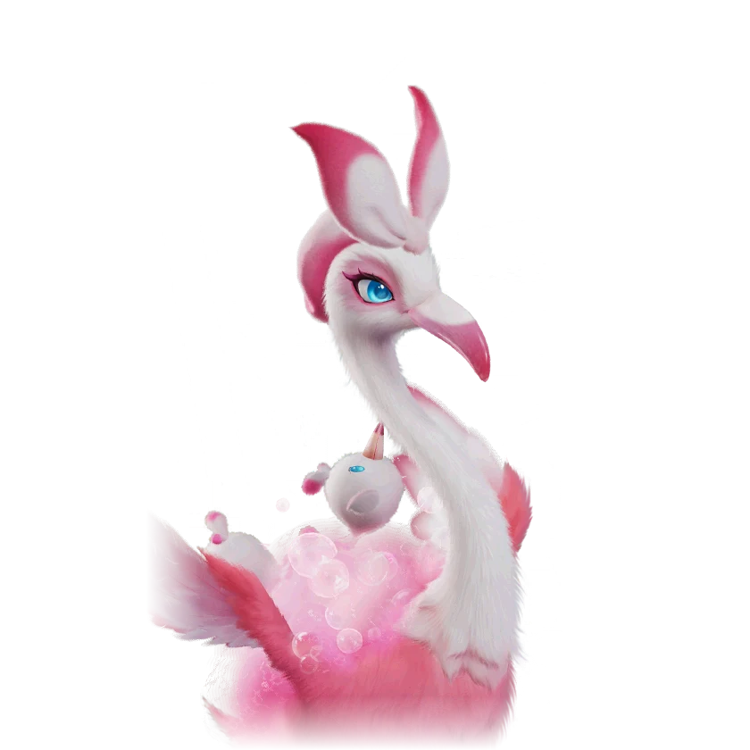

รายชื่อ Aniimo › #081

ฟลามิงโกรุ่นใหญ่ (Erlath)
#081ธาตุน้ำNovaRegenTier B
ขนหลั่งน้ำมันตลอดเวลา แค่ถูนิดเดียวก็เกิดฟองได้สารพัดแบบ และแน่นอนว่ามันใช้ฟองที่นุ่มฟูที่สุดปกป้อง Fahloo ที่อยู่บนหลัง
ดูรายละเอียดเต็ม ร่างพิเศษ และร่างเปล่งประกายค่าสถานะพื้นฐาน
| HP | 120 |
|---|---|
| ATK | 90 |
| P.DEF | 80 |
| M.DEF | 90 |
| REGEN | 110 |
| BREAK | 50 |
สกิล
| โจมตีปกติ | ATK น้ำ ใช้พลังน้ำโจมตีเป้าหมายจากระยะไกล |
| สกิล 1 | Bubble Blast น้ำ ยิงฟองไปทางเป้าหมาย กระแทกให้ถอยและทำดาเมจ พร้อมทิ้งฟองไว้ 9 วินาที ร่ายติดต่อกันได้ เก็บได้สูงสุด 3 ครั้ง |
| สกิล 2 | Here Comes the Bubble น้ำ ร่ายฟองยักษ์ ลดความเร็วเคลื่อนที่ของเป้าหมายในระยะ 15% และอัตราฟื้น EP 20% พร้อมเพิ่มความเร็วเคลื่อนที่ของเพื่อนในระยะ 15% |
| สกิล 3 | Bubbles น้ำ สร้างสนามฟอง ทุกครั้งที่เพื่อนร่ายสกิลธาตุน้ำในสนามจะเกิดฟอง 1 ลูก สูงสุด 6 ลูก อยู่ได้ 15 วินาที กดปุ่มสกิลอีกครั้งเพื่อระเบิดฟองทั้งหมด แต่ละลูกฟื้น 4 EP (+0.6 ต่อ REGEN 100 สูงสุด 7) ถ้าดูดซับแอ่งน้ำจะฟื้นเพิ่มอีก 10 EP |
| อัลติเมต | Crazy Bubbles น้ำ สร้างฟอง 6 ลูกอย่างรวดเร็ว และเพิ่มดาเมจธาตุน้ำของเพื่อน 16% (+1.5% ต่อ ATK 100 สูงสุด 28%) เป็นเวลา 30 วินาที |
สายวิวัฒนาการ
- ฟลามิงโกสาว → ฟลามิงโกรุ่นใหญ่ (Aniimo เลเวล 49)
จุดเกิด
- Tideblossom Coast Lv. 53–60
Held Item ที่แนะนำ
- Spirited Feather Aniimo ที่สวมใส่ได้ REGEN เพิ่ม 0.7 ต่อเลเวล
งานใน Homeland
งานธาตุน้ำ Lv.3